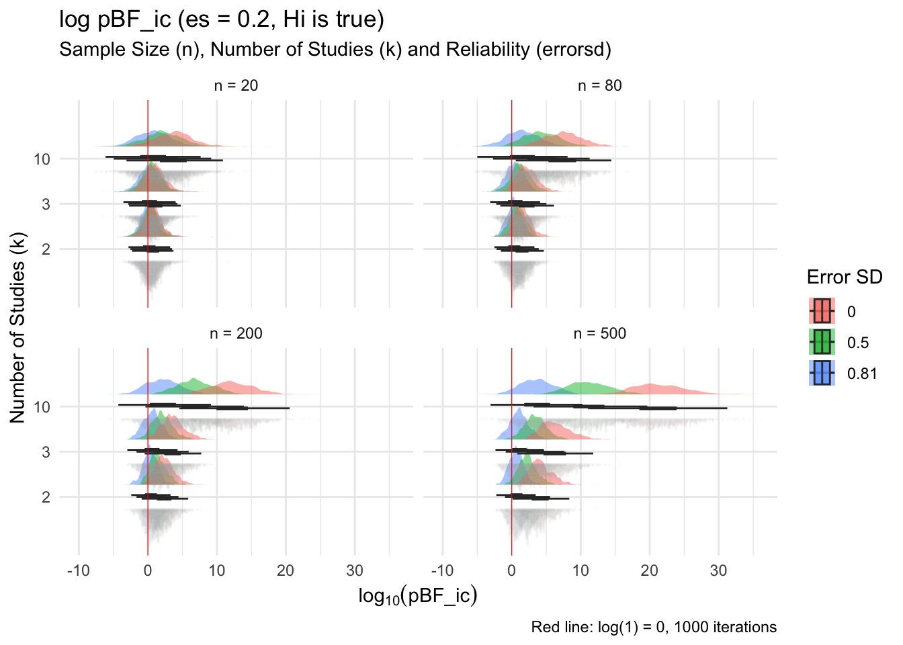
BES Manuscript First Draft
Bayesian Evidence Systhesis
In the original simulation published by @van_lissa_tutorial_2024, the hypothesis \(H_i: \rho > 0.1\) is tested against either the unconstrained hypothesis, which includes all possible values of \(\rho\): \(H_u: \rho \in [-1, 1]\), or the complement hypothesis, which is mutually exclusive with \(H_i\): \(H_c: \rho \le 0.1\).
The simulation conditions consist of various parameters:
ndataset:number of iterations per condition (1000)errorsd:reliability (0.6, 0.8 and 1) in terms of standard error (note: lower errorsd correspond to higher relability)es:true effect size (.1 or 0.2)n:mean sample size per study (20, 80, 200, 500)k:number of studies (2, 3, 10)hyp_val:threshold for \(H_i\) (.1)
Simulation 0: Orignial Simulation, general plots of distribution of \(log_{10} \text{ } pBF_{ic}\) and \(log_{10} \text{ } pBF_{iu}\)
When using Bayesian Evidence Synthesis/product Bayes factors (pBF), @van_lissa_tutorial_2024 used a threshold pBF value of 3 to assess sensitivity (the ability to detect a true effect in the population) and specificity (the ability to correctly reject a hypothesis when it is false). As this threshold is arbitrary, we decided to instead examine the full distribution of pBF values to better understand its behaviour across conditions. A \(BF_{ic}\) of 1 indicates there is no evidence for either \(H_i\) or \(H_c\), all \(BF_{ic}\) values above 1 are classified as evidence in favour of \(H_i\), and all \(BF_{ic}\) values below 1 are classified as evidence in favour of \(H_c\)
For each condition, pBFs obtained from 1000 simulation iterations are visualised using raincloud plots. To make the plots easier to interpret, the pBFs were \(log_{10}\) transformed. This means that positive \(log_{10}\) pBF values (> \(log_{10}(1) = 0\)) indicate evidence for \(H_i\), whereas negative \(log_{10}\) pBF values (< \(log_{10}(1) = 0\)) indicate evidence in favour of the competing hypothesis (either \(H_i\) or \(H_c\)).
When the true effect (es) is \(\rho = .2\), this means that \(H_i\) is true and, by definition, \(H_c\) is false. Because these hypotheses are mutually exclusive, \(log_{10} \text{ } pBF_{ic}\) values greater than zero can be classified as ‘true positives’ (TP), whereas values below zero can be classified as ‘false negatives’ (FN).
When \(H_i\) is evaluated against \(H_u\), it is a bit more complicated. Given that \(H_u\) contains all possible values of \(\rho\), \(H_u\) is not false when \(H_i\) is true. Postitive \(log_{10} \text{ } pBF_{iu}\) values then indicate there is just more evidence in favour of the more informative hypothesis \(H_i\) than in favour of the less informative hypothesis \(H_u\). Similarly, negative \(log_{10} \text{ } pBF_{ic}\) values do not indicate evidence for a false hypothesis (FN), but rather indicate failing to support the more informative hypothesis \(H_i\) over the less informative \(H_u\).
When the true effect is 0.1, this means that either \(H_i\) or \(H_c\) is true, as they are mutually exclusive and theoretically \(\rho\) can never perfectly equal 0.1. In this case, it would be expected that the \(log_{10} \text{ } pBF_{ic}\) values fail to support either hypothesis, peaking around zero.
Simulation 0-a: Testing \(H_i\) against \(H_c\)
0-a1: \(Log_{10} \text{ } pBF_{ic}\) When True Effect is 0.2 - \(H_i\) is true
This plot shows that the number of FN (\(log_{10} \text{ } pBF_{ic} < 0\)) decreases when the number of studies (k), and the within-study sample size (n) increase. When the reliability of the studies is low (at higher values of errorsd), the decrease in FN is least prominent.
0-a2: \(Log_{10} \text{ } pBF_{ic}\) When True Effect is 0.1 - \(H_i\) is false
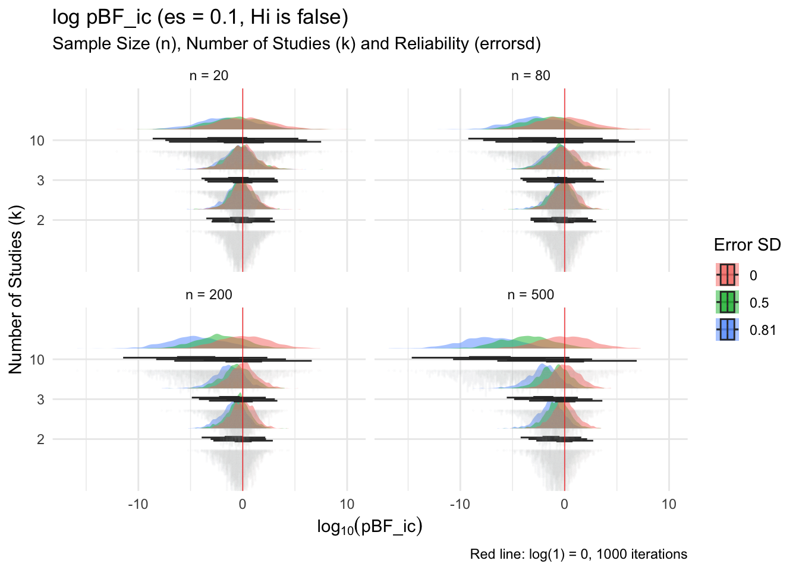
In this plot, the true effect size (es) equals 0.1, which means that the true parameter value is on the boundary of the hypotheses \(H_i\) and \(H_c\). Therefore it is expected that the \(log_{10} pBF_ic\) would be distributed symmetrically around zero, being unable to provide convincing evidence for either hypothesis.
If the within-study sample sizes (n) are small (e.g., 20 or 50), this is roughly the case. However, when the within-study sample sizes (n) increase (e.g., 200, 500), the \(log_{10} pBF_ic\) shifts towards evidence for \(H_c\), which is surprising. This pattern is especially prominent with increasing errorsd values. Whereas the \(log_{10} pBF_ic\) distributions are symmetrical around zero when the error of 0 - which we would expect - at higher error values the \(log_{10} pBF_ic\) shifts towards evidence in favour of \(H_c\).
Simulation 0-b: Testing \(H_i\) against \(H_u\)
0-b1: \(Log_{10} \text{ } pBF_{iu}\) When True Effect is 0.2 - \(H_i\) is true
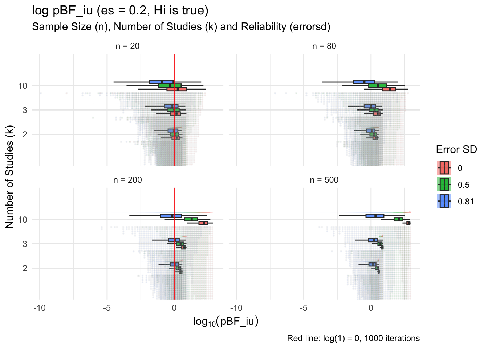
This figure shows that when the true effect es = 0.2, in general, evidence accumulates in favour of \(H_i\). As the within-study sample size (n) and the number of studies (k) increase, the distributions shift further towards more positive \(log_{10} \text{ } pBF_{iu}\) values. However, with higher error (errorsd = 0.81) the shift towards evidence for \(H_i\) is not as present, with negative \(log_{10} \text{ } pBF_{iu}\) values, or \(log_{10} \text{ } pBF_{iu}\) values around zero.
0-b2: \(Log_{10} \text{ } pBF_{iu}\) When True Effect is 0.1 - \(H_i\) is false
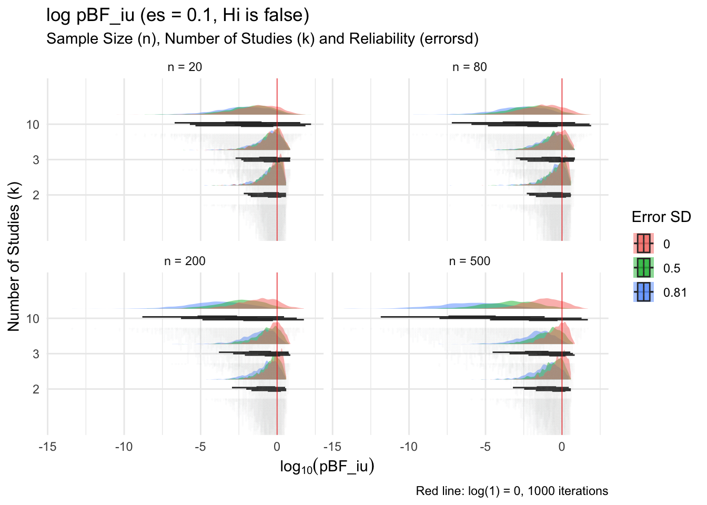
This figure shows that when the true effect es = 0.1, higher errorsd values, and increasing number of studies (k) and within-study sample size (n) result in a larger shift of evidence towards \(H_u\).
Simulation 1: Testing constrained parameter spaces - correlations
Simulation 1-a: Testing hypotheses (\(H_i\) versus \(H_c\)) with different constrained parameter spaces (correlations)
Given that the parameter of interest in this simulation study is a correlation, this implies that the full parameter space is constrained: \(\rho \in [-1, 1]\). This means that \(H_c\) contains a larger proportion of the full parameter space (\(\rho \in [-1, 0.1]\)) than \(H_i\) (\(\rho \in [0.1 - 1]\)), raising the question if the distributional shift we observe when es = 0.1 can be explained by the fact that the two hypotheses are not equally large in terms of the parameter space. When there’s error, will the evidence distribution always shift in favour of the hypothesis that contains the largest parameter space?
This will be tested by running the simulation again, while testing the following hypotheses:
- \(H_i: \rho > 0 \text{ versus } H_c: \le 0 \text{, when es = } 0\), in this case it is expected that at all error values, the distributions will be symmetrical around \(log_{10} \text{ } pBF_{ic}\) values of zero, as both hypotheses entail an equally large parameter space.
- \(H_i: \rho > 0.8 \text{ versus } H_c: \le 0.8 \text{, when es = } 0.8\), in this case it is expected that with higher error values, there will be an even more dramatic shift towards negative \(log_{10} \text{ } pBF_{ic}\) values, indicating evidence for \(H_c\).
- \(H_i: \rho > -0.8 \text{ versus } H_c: \le -0.8 \text{, when es = } -0.8\), in this case it is expected that with higher error values, there will be shift towards positive \(log_{10} \text{ } pBF_{ic}\) values, indicating evidence for \(H_i\), as now this hypothesis will entail the largest proportion of the parameter space.
1-a1: \(Log_{10} \text{ } pBF_{ic}\), es = 0.1, correlation
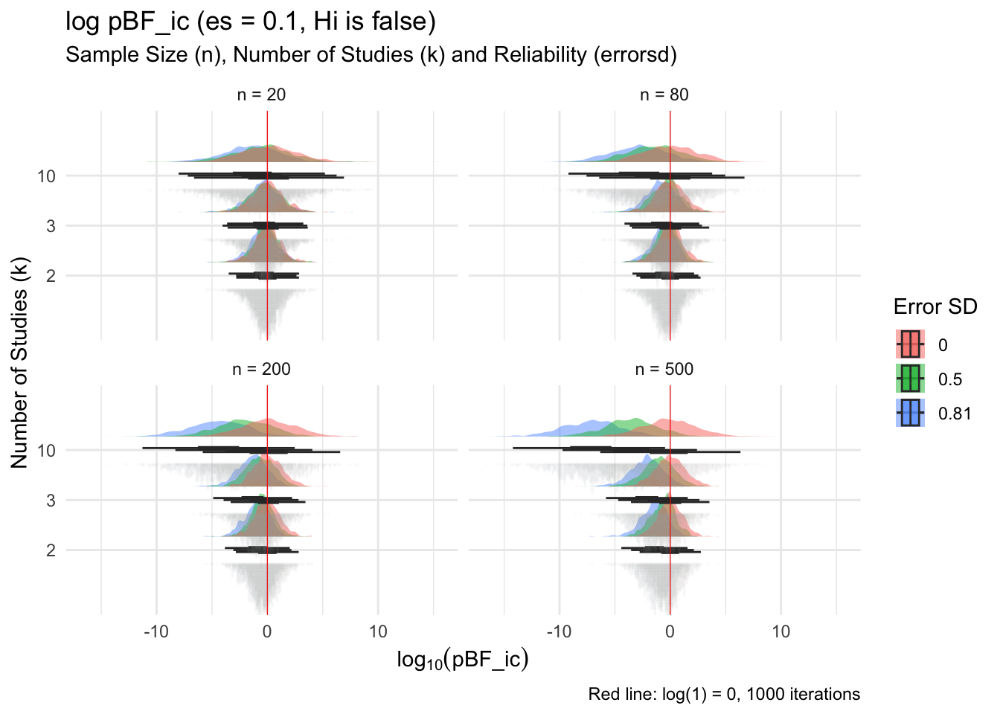
This plot shows the same pattern as in the original simulation, where higher error (errorsd) results in a shift towards evidence in favour of \(H_c\), especially when the number of studies (k) and the within-study sample sizes (n) are large.
1-a2: \(Log_{10} \text{ } pBF_{ic}\), es = 0, correlation
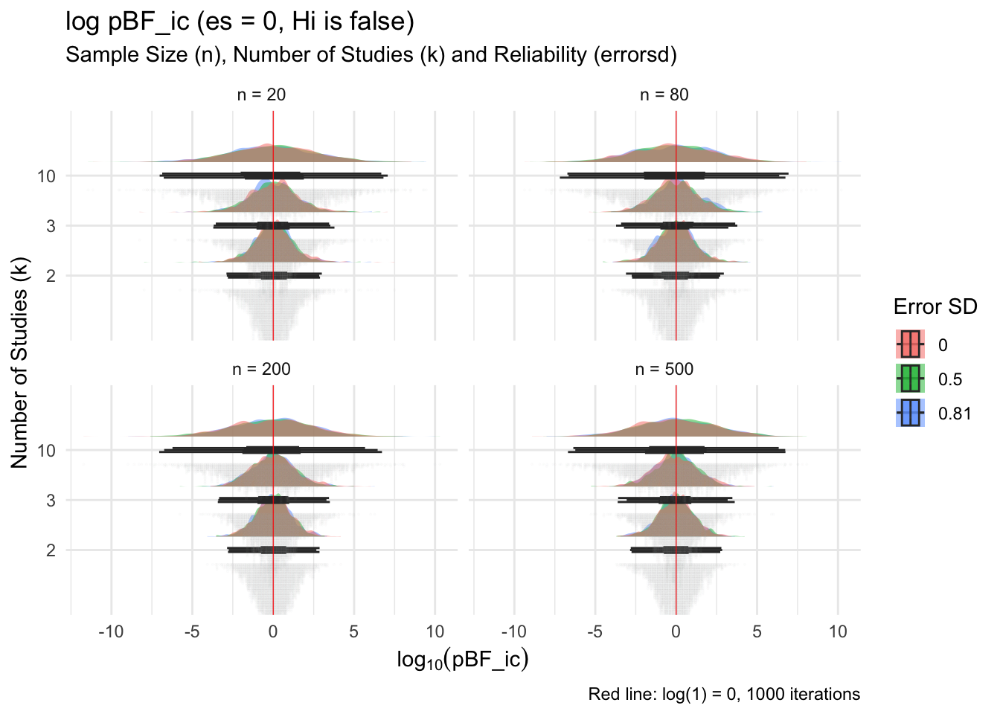
This plot shows that when both hypotheses have equal parameter spaces (\(H_i: [0 , 1] \text{ versus } H_c: [-1 , 0]\)), across all conditions the \(log_{10} \text{ } pBF_{ic}\) is nicely symmetrical around the value of zero, as expected.
1-a3: \(Log_{10} \text{ } pBF_{ic}\), es = 0.8, correlation
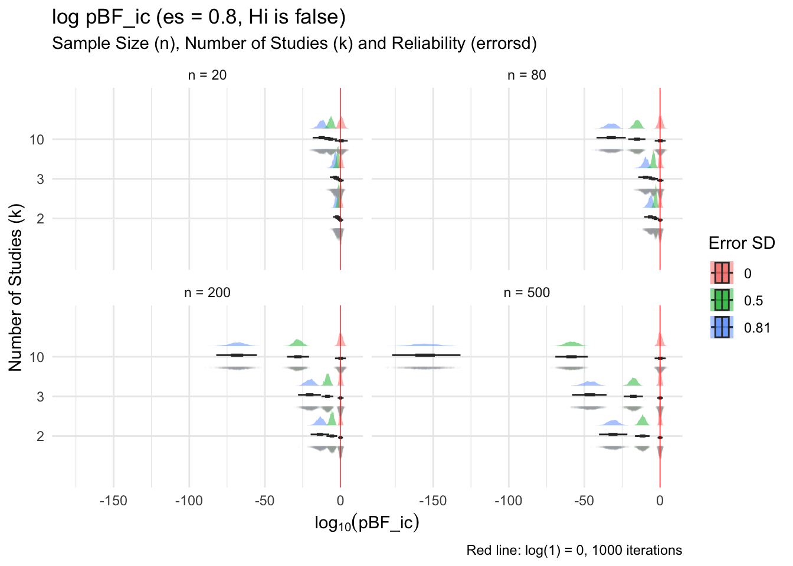
This plot shows that the distribution-shift pattern is more exaggerated when the difference between the parameter space sizes of the hypotheses is larger (\(H_i: [0.8 , 1] \text{ versus } H_c: [-1 , 0.8]\)). In this case, the parameter space of \(H_c\) is much larger than that of \(H_i\), and the evidence shifts in favour of \(H_c\) as the error (errorsd), number of studies (k), and within-study sample size (n) increase.
1-a4: \(Log_{10} \text{ } pBF_{ic}\), es = -0.8, correlation
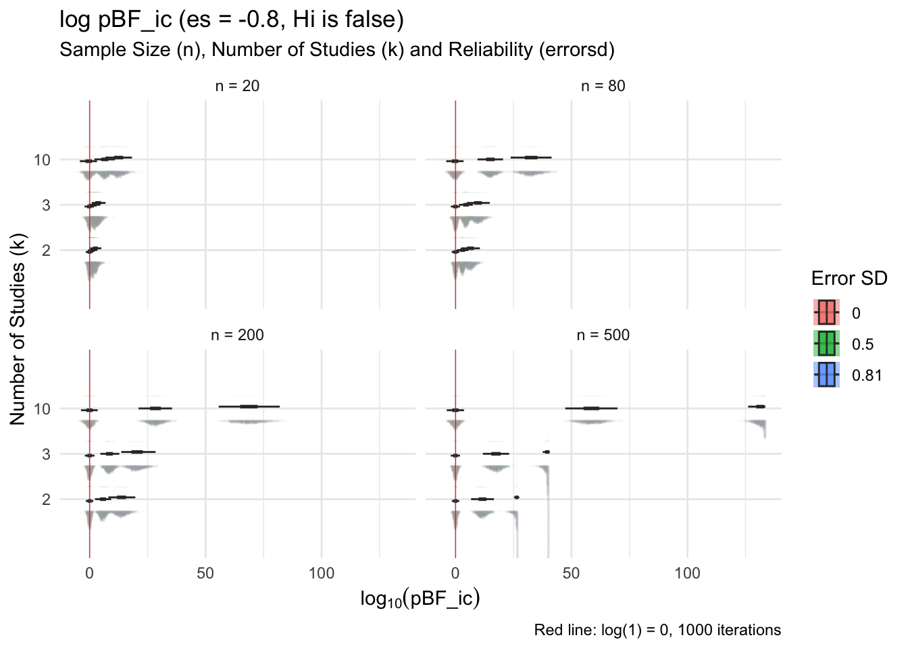
This plot is in line with the previous one, and shows that the opposite distribution-shift arises when the large differences between the parameter space sizes are the other way around (\(H_i: [-0.8 , 1] \text{ versus } H_c: [-1 , -0.8]\)). In this case, the parameter space of \(H_i\) is much larger than that of \(H_c\), and the evidence shifts in favour of \(H_i\) as the error (errorsd), number of studies (k), and within-study sample size (n) increase.
Summary of plots \(log_{10} \text{ } pBF_{ic}\) with various es and hyp_val, correlation
These simulated results show exactly what we expected: when the reliability is low (high error), the \(log_{10} \text{ } pBF_{ic}\) will always tend to provide evidence for the hypothesis that has the largest parameter space.
Simulation 1-b: Testing hypotheses (\(H_i\) versus \(H_u\)) with different constrained parameter spaces (correlations)
Now we know how the \(log_{10} \text{ } pBF_{ic}\) behaves with a constrained parameter space. However, in this case the evaluated hypotheses are mutually exclusive, so if one, e.g. \(H_i\), has a bigger parameter space, the other, e.g. \(H_c\), automatically has a smaller parameter space.
This raises the question how the \(log_{10} \text{ } pBF_{iu}\) distribution behaves when \(H_i\) is tested against \(H_u\). In other words, when the parameter space sizes are not mutually exclusive. To test this, the same hypotheses (\(H_i > 0\); \(H_i > 0.1\); \(H_i > 0.8\); \(H_i > -0.8\)) are tested, and \(log_{10} \text{ } pBF_{iu}\) distributions are evaluated.
If it is true that under certain conditions evidence will shift towards hypotheses with larger parameter spaces, we would expect there to always be an evidence shift towards \(H_u\), as this hypothesis will always have the largest parameter space (\(H_u: \rho \in [-1,1]\)).
1-b1: \(Log_{10} \text{ } pBF_{iu}\), es = 0.1, correlation
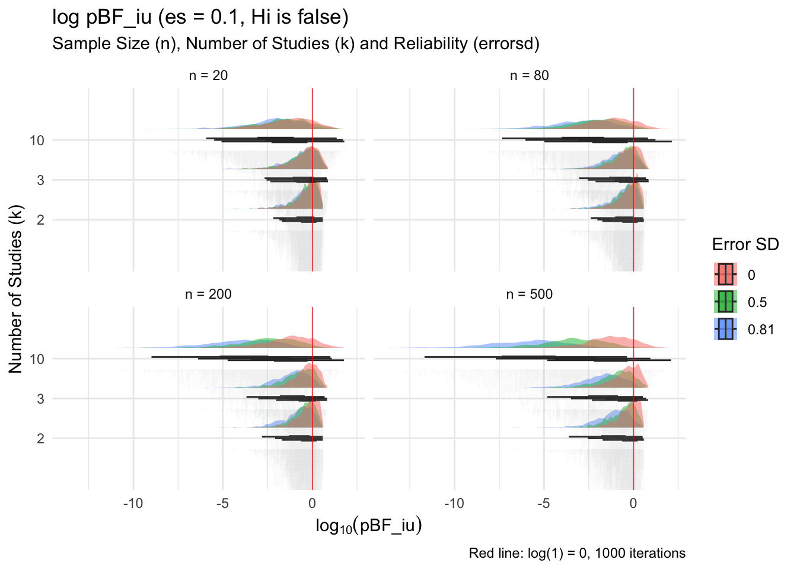
This plot shows the same pattern as the distribution of \(log_{10} \text{ } pBF_{ic}\) that we observed in Simulation 1-a. Higher errorsd, number of studies (k) and within-study sample size (n) result in a larger shift of evidence towards \(H_u\).
Since the parameter space of \(H_u\) is much larger than that of \(H_i\) (\(H_i: [0.1 , 1] \text{ versus } H_u: [-1 , 1]\)), this is consistent with the expectation that under certain conditions, evidence will shift towards hypotheses with larger parameter spaces.
1-b2: \(Log_{10} \text{ } pBF_{iu}\), es = 0, correlation
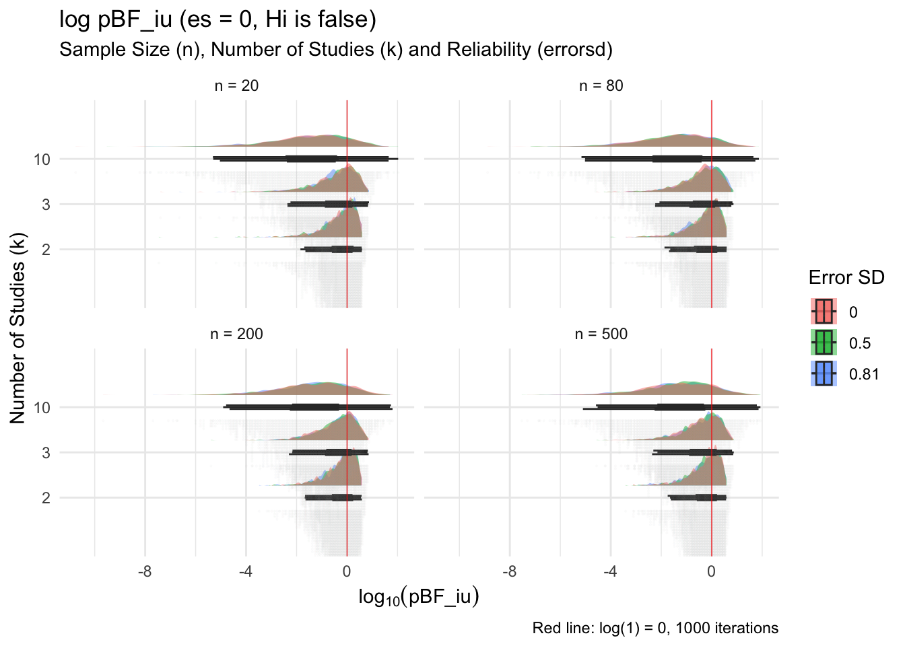
When the true effect (es) is 0, the distributions of \(log_{10} \text{ } pBF_{iu}\)) are largely similar across conditions varying in within-study sample size (n) and measurement error (errorsd). In these conditions, the distributions are approximately centred around zero, although they consistently exhibit a tail favouring \(H_u\).
In contrast, increasing the number of studies (k) seems to lead to a clearer shift of the distribution towards negative \(log_{10} \text{ } pBF_{iu}\)) values, indicating stronger evidence for \(H_u\).
1-b3: \(Log_{10} \text{ } pBF_{iu}\), es = 0.8, correlation
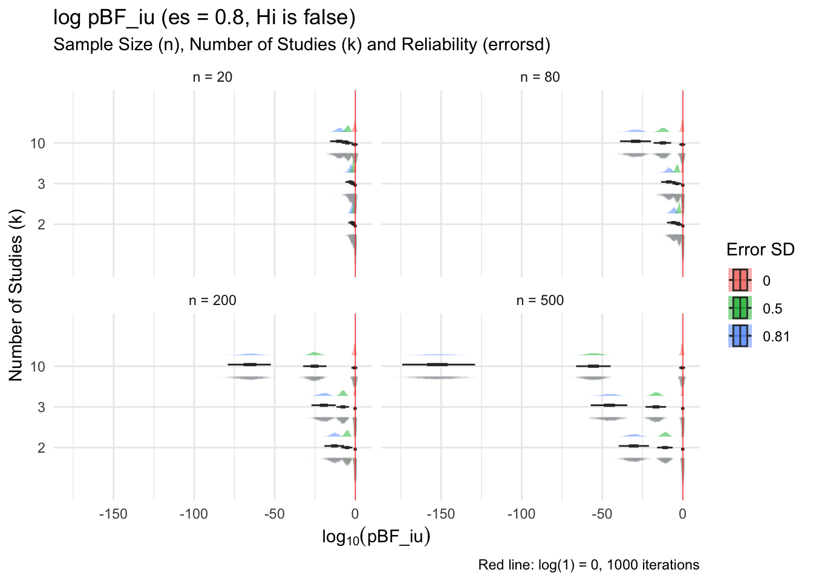
This plot is consistent with the pattern observed in Simulation 1-a, as well as the expectation that hypotheses with larger parameter spaces tend to gain more evidence when errorsd, k and n increase. Only when the errorsd is 0, the distributions are nicely centered around 0.
As differences in parameter spaces between \(H_u\) and \(H_i\) are now even more extreme (\(H_i: [0.8 , 1] \text{ versus } H_u: [-1 , 1]\)), this is reflected in the more extreme distributional shifts.
1-b4: \(Log_{10} \text{ } pBF_{iu}\), es = -0.8, correlation
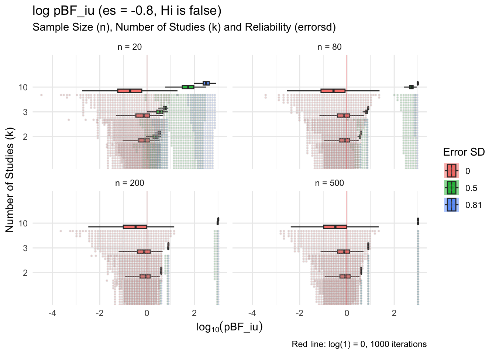
Although \(H_u\) still has a larger parameter space than \(H_i\) (\(H_i: [-0.8 , 1] \text{ versus } H_u: [-1 , 1]\)), when the errorsd increases, we observe a shift in evidence towards \(H_i\). At the same time, when the errorsd is 0, it seems like the evidence tends slightly towards \(H_u\).
Summary of plots \(log_{10} \text{ } pBF_{iu}\) with various es and hyp_val, correlation
The resulting \(log_{10} \text{ } pBF_{iu}\) distributions under various different operationalisations of \(H_i\), and different simulation conditions, seem largely consistent with the idea that evidence shifts towards the hypothesis with the largest parameter space, when the errorsd (and k and n) increases.
However, the observation that evidence shifts towards \(H_i\) and away from \(H_u\), when es = -0.8 and the errorsd increases, was not in line with what was expectated.
Simulation 1: General conclucion
The observation that evidence shifts towards \(H_i\) and away from \(H_u\), when es = -0.8 and the errorsd increases, hints that all observed evidence shifts might be explained in terms of fit and complexity.
By definition, Bayes factors reward hypotheses that fit the data well without being unnecessarily complex, and penalise hypotheses that are either too restrictive (poor fit), or insufficiently restrictive by allowing many values that are not in line with the data (too complex). It is therefore likely that hypotheses with larger parameter spaces will often fit the data better. In Simulations 1-a and 1-b, this improved fit may often have outweighed the increasing complexity of hypotheses with larger parameter spaces, resulting in an evidence shift towards the hypothesis with the largest parameter space.
However, when additional values allowed by a less restricted hypothesis are not supported by the data, their complexity can become a disadvantage, and a more restricted hypothesis can be preferred. This appears to be the case in the condition in Simulation 1-b where es was -0.8 and the evidence shifted in favour of \(H_i\), the hypothesis with the smallest parameter space. Because both hypotheses are both relatively complex, the more restricted hypothesis, \(H_i\), likely gains an advantage over the less restricted hypothesis, \(H_u\).
Simulation 2: Testing unconstrained parameter spaces - covariance
To test whether the same effect holds in an unconstrained parameter space, instead of using correlations, the simulation was ran with covariances, that can range from \([-\infty,\infty]\). If the size of the parameter space indeed plays a role in the shift of distributions, when using covariances, we would expect the distributions to be symmetrical around \(log_{10}\) pBF values of zero, at all error values and true effect sizes, as the differences in parameter space sizes would be neglectable in this case.
These plots show that if there is an unconstrained parameter space, no matter what the hypothesis or error is, the distributions are symmetrical around a \(log_{10}\) pBF of zero, indicating that the studies do not provide convincing evidence for either \(H_i\) or \(H_c\).
Simulation 2-a: Testing hypotheses (\(H_i\) versus \(H_c\)) with different unconstrained parameter spaces (covariances)
2-a1: \(Log_{10} \text{ } pBF_{ic}\), es = 0.1, covariance
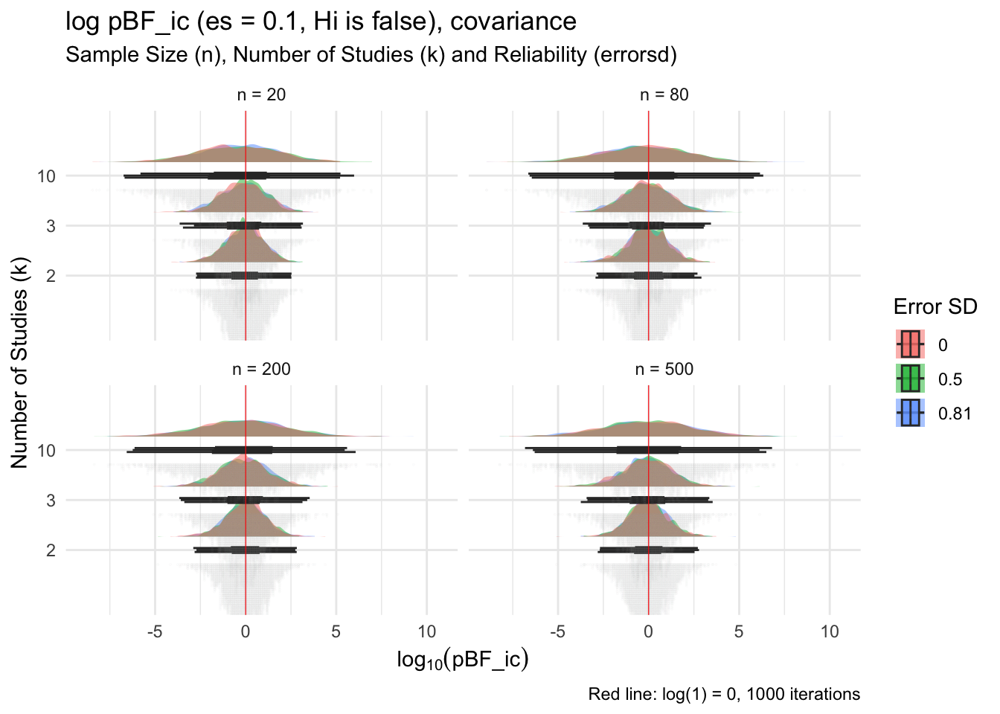
When es = 0.1, across all conditions, the \(log_{10} \text{ } pBF_{ic}\) distributions are nicely centered around zero.
2-a2: \(Log_{10} \text{ } pBF_{ic}\), es = 0, covariance
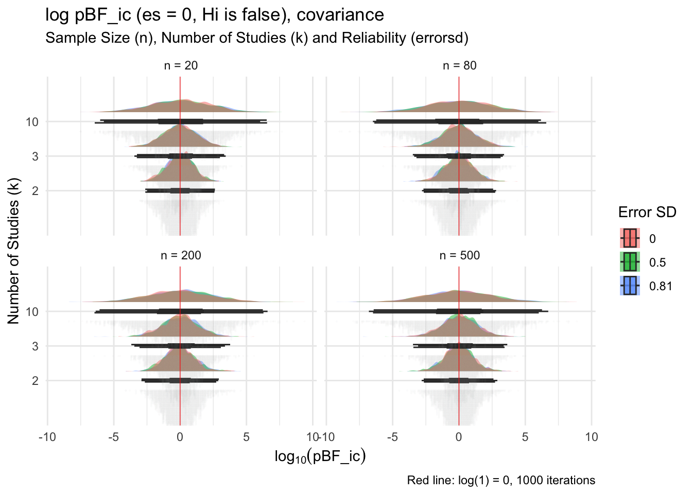
When es = 0, across all conditions, the \(log_{10} \text{ } pBF_{ic}\) distributions are nicely centered around zero.
2-a3: \(Log_{10} \text{ } pBF_{ic}\), es = 0.8, covariance
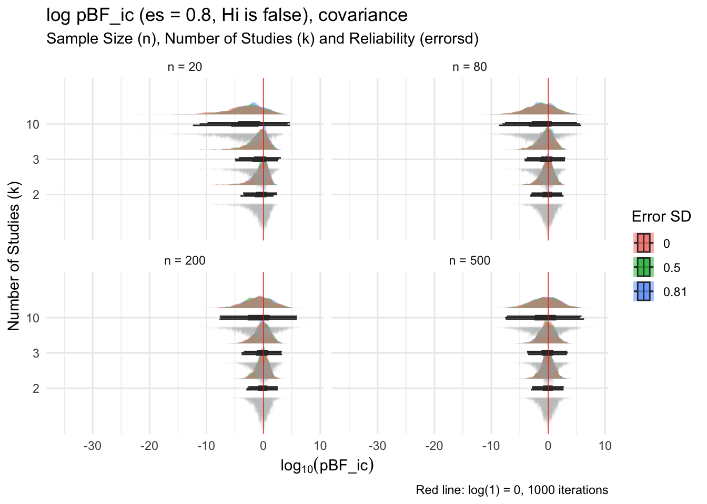
When es = 0.8, across almost all conditions, the \(log_{10} \text{ } pBF_{ic}\) distributions are nicely centered around zero. Only when the within-study sample size is low (n = 20, also a little when n = 80), there seems to be quite a large tail favouring \(H_c\), especially when the number of studies (k) is high.
2-a4: \(Log_{10} \text{ } pBF_{ic}\), es = -0.8, covariance
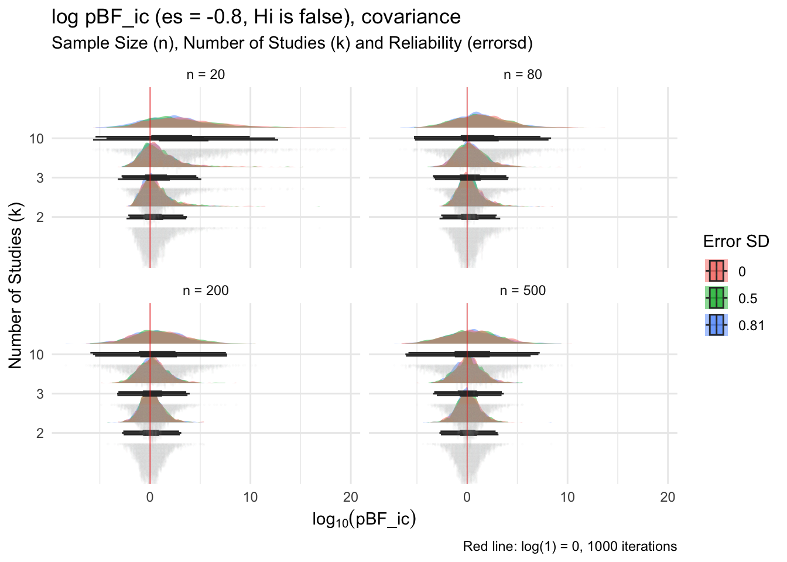
When es = -0.8, in general, across most conditions the \(log_{10} \text{ } pBF_{ic}\) distributions are centered around zero. However, again, when the within-study sample size is low (e.g., n = 20 or n = 80) and when the number of studies increases (k), there is quite a large tail favouring \(H_i\). The errorsd does not seem to affect the distributions. This skew seems even more prominent than when es = 0.8.
Summary of plots \(log_{10} \text{ } pBF_{ic}\) with various es and hyp_val, covariance
Simulation 2-b: Testing hypotheses (\(H_i\) versus \(H_u\)) with different constrained parameter spaces (covariances)
2-b1: \(Log_{10} \text{ } pBF_{iu}\), es = 0.1, covariance
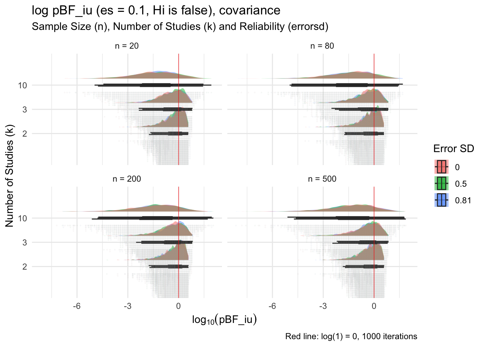
When es = 0.1, although varying errorsd and n values do not seem to drastically affect the distributions, with increasing within-study sample size (n) the \(log_{10} \text{ } pBF_{iu}\) distributions show a shift of evidence towards \(H_u\).
2-b2: \(Log_{10} \text{ } pBF_{iu}\), es = 0, covariance
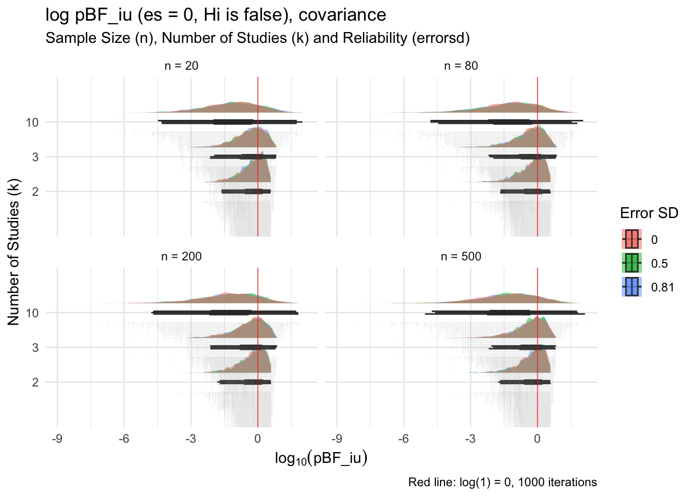
When es = 0, the pattern is consistent with that in 2-b1; although varying errorsd and n values do not seem to drastically affect the distributions, with increasing within-study sample size (n) the \(log_{10} \text{ } pBF_{iu}\) distributions show a shift of evidence towards \(H_u\).
2-b3: \(Log_{10} \text{ } pBF_{iu}\), es = 0.8, covariance
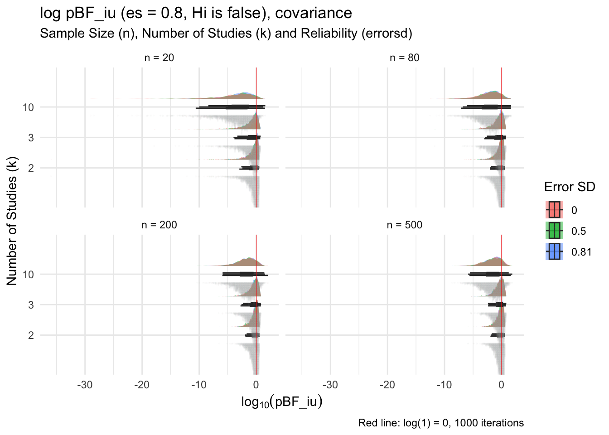
Although the skew seems more prominent here, this pattern is consistent with those in 2-b1 and 2-b2. In most cases the tail of the \(log_{10} \text{ } pBF_{iu}\) distribution is skewed towards evidence for \(H_u\), which increases with increasing k. Again errorsd does not seem to affect the \(log_{10} \text{ } pBF_{iu}\) distributions a lot.
2-b4: \(Log_{10} \text{ } pBF_{iu}\), es = -0.8, covariance
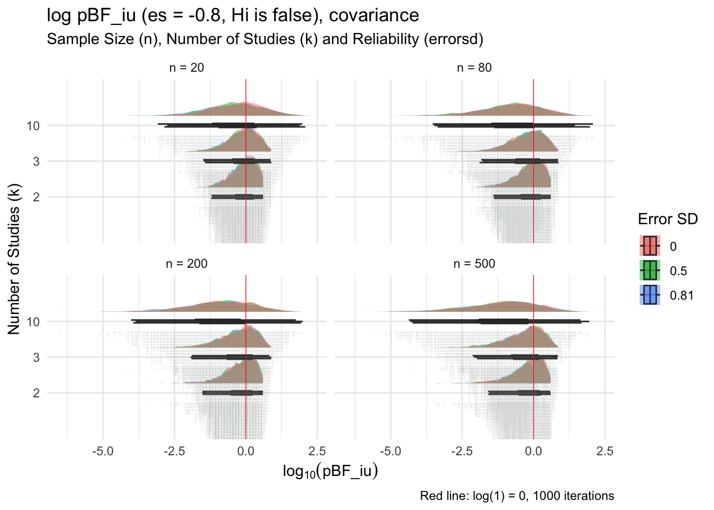
When es = -0.8, almost all \(log_{10} \text{ } pBF_{iu}\) distributions are centered around zero quite nicely.
Summary of plots \(log_{10} \text{ } pBF_{iu}\) with various es and hyp_val, correlation
Across covariance-based analyses, the \(log_{10} \text{ } pBF_{iu}\) seem more stable compared to the correlation case, as was expected with an unconstrained parameter space if the fit/complexity indeed play a role in the distributional shifts observed in Simulation 1. Regardless of the true effect size es, variations in error (errorsd) and within-study sample size (n) did not seem to affect the distributions much, and did not seem to induce strong shifts in evidence. In contrast, increasing the number of studies (k) did seem to introduce a skew towards negative \(log_{10} \text{ } pBF_{iu}\) values, indicating increasing evidence in favour of \(H_u\).
These results suggest that when the effect size has an unbounded parameter space, differences in hypothesis fit and complexity are less important than when the parameter space is constrained, and shifts in evidence seem to be driven by the number of studies, rather than other parameters.
Simulation 3: Testing unconstrained parameter spaces - z-transformation of correlation
Simulation 3-a: Testing hypotheses (\(H_i\) versus \(H_c\)) with different unconstrained parameter spaces (z-transformation)
3-a1: \(Log_{10} \text{ } pBF_{ic}\), es = 0.1, z-transformation
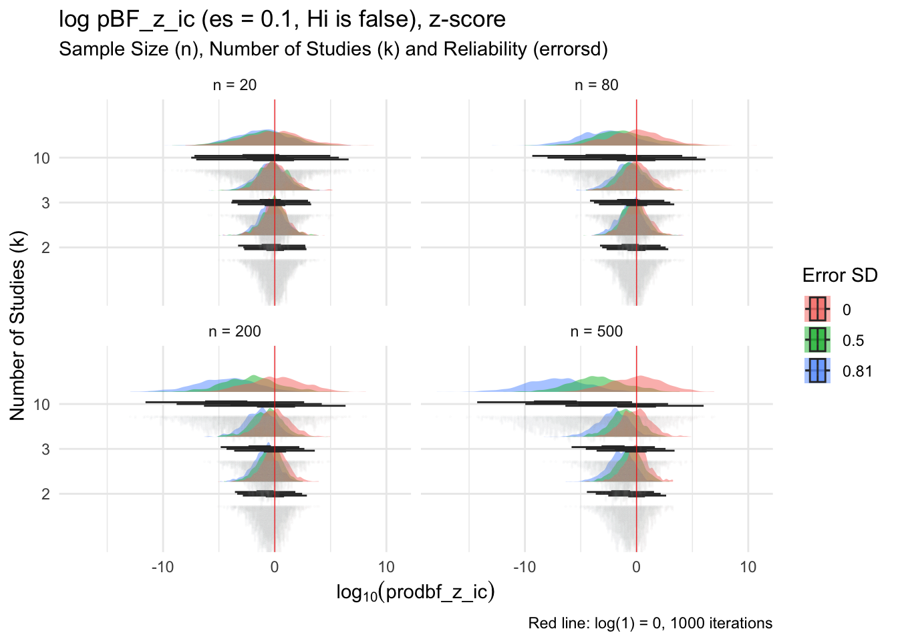
3-a2: \(Log_{10} \text{ } pBF_{ic}\), es = 0, z-transformation
3-a3: \(Log_{10} \text{ } pBF_{ic}\), es = 0.8, z-transformation
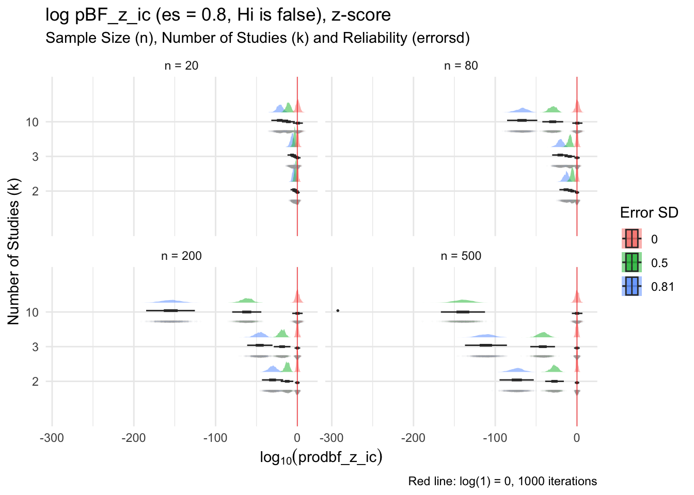
3-a4: \(Log_{10} \text{ } pBF_{ic}\), es = -0.8, z-transformation
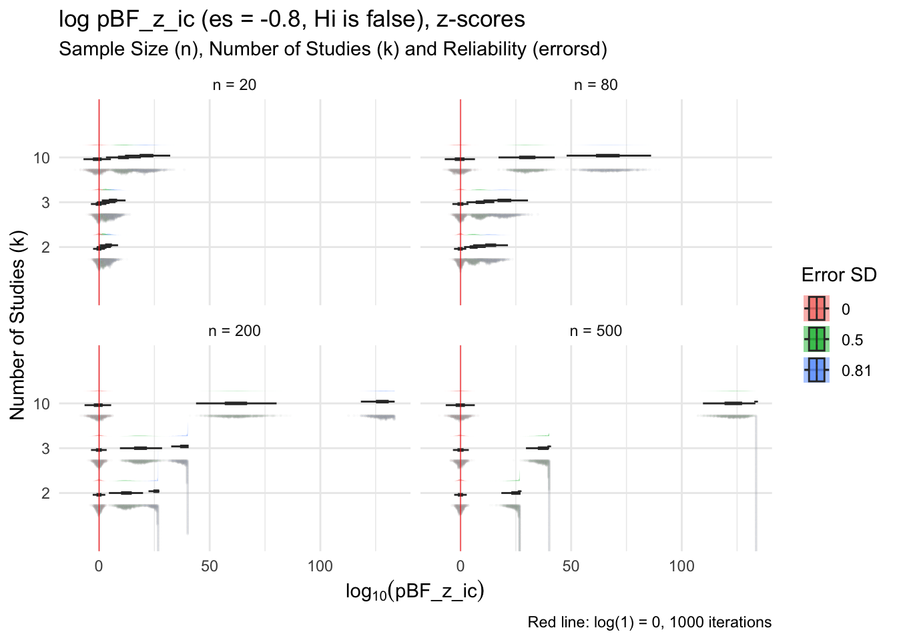
Summary of plots \(log_{10} \text{ } pBF_{ic}\) with various es and hyp_val, z-transformation of correlation
Simulation 3-b: Testing hypotheses (\(H_i\) versus \(H_u\)) with different constrained parameter spaces (z-transformation)
3-b1: \(Log_{10} \text{ } pBF_{iu}\), es = 0.1, z-transformation
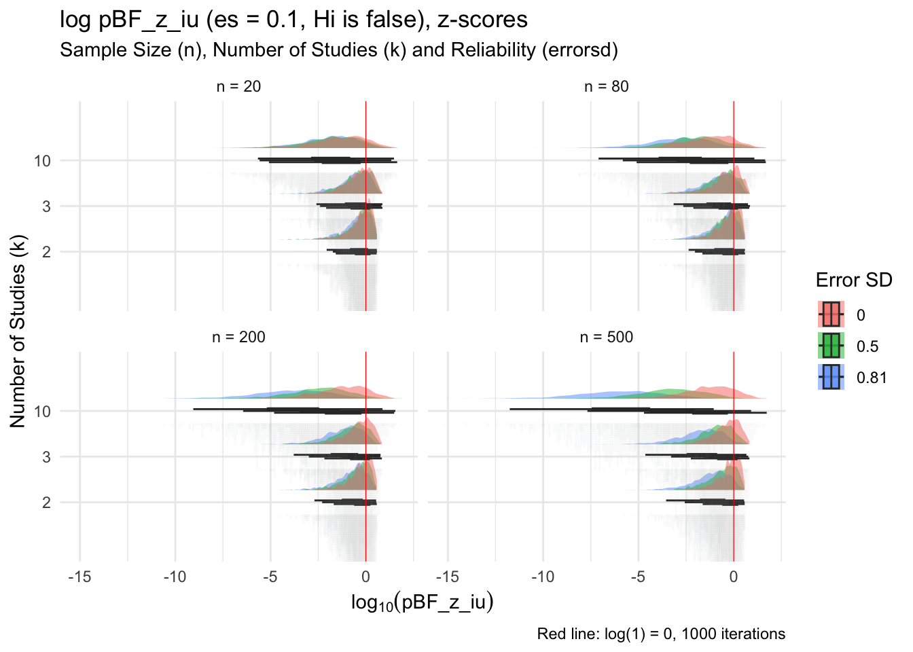
3-b2: \(Log_{10} \text{ } pBF_{iu}\), es = 0, z-transformation
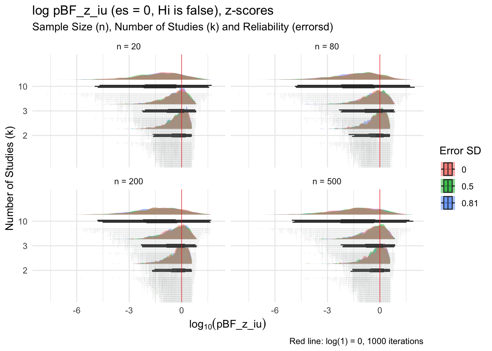
3-b3: \(Log_{10} \text{ } pBF_{iu}\), es = 0.8, z-transformation
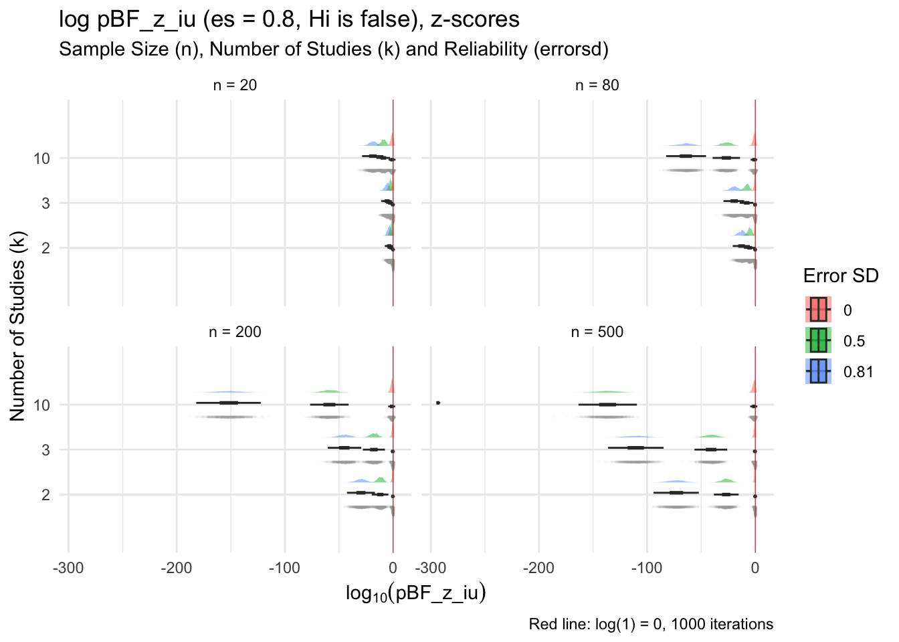
3-b4: \(Log_{10} \text{ } pBF_{iu}\), es = -0.8, z-transformation
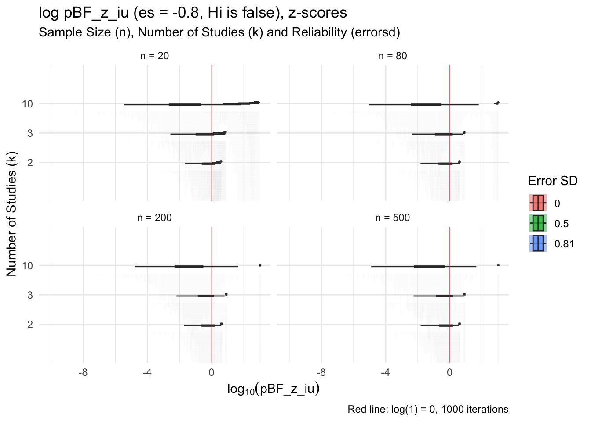